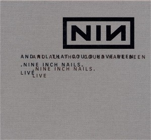

And All That Could Have Been (Still) (2002)
Industrial
| Artist | Nine Inch Nails |
|---|---|
| Year | 2002 |
| Genre | Industrial |
| Tracks | 9 |
Track List
| 1 | Something I Can Never Have | 6:39 |
| 2 | Adrift And At Peace | 2:52 |
| 3 | The Fragile | 5:12 |
| 4 | The Becoming | 4:30 |
| 5 | Gone, Still | 2:36 |
| 6 | The Day The World Went Away | 5:17 |
| 7 | And All That Could Have Been | 6:14 |
| 8 | The Persistence Of Loss | 4:04 |
| 9 | Leaving Hope | 5:57 |